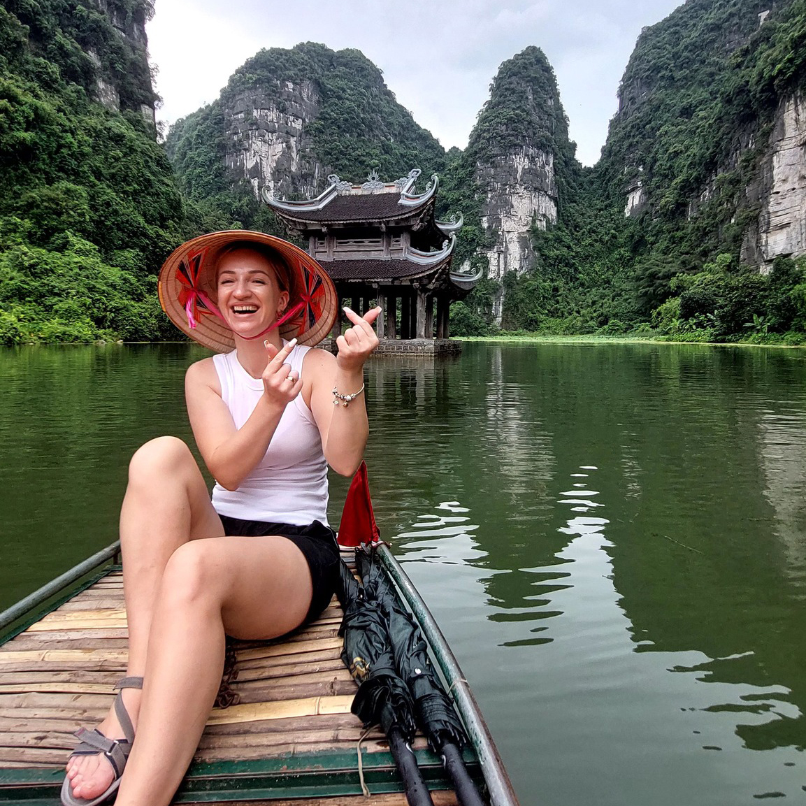

Where I bring ideas to life through intuitive and beautiful designs. With 14 incredible years in graphic design, I’ve learned, evolved, and poured my creativity into crafting experiences that truly connect with people.
UI design
UX design
Design Systems
Interaction design
"Making it pop"

Front-end development
HTML / CSS
JavaScript (kinda)
Swearing at my computer
Eating pasta
I drink a lot of coffee
In love with travaling
Want to climb on half of Everest
I like cook placinte
A pixel perfect person
I'm crafting paper cake toppers
Resolve logical problems
Figma
Design Sistem
UX research
Cake Topper maker
Plan vacation in detail with less money